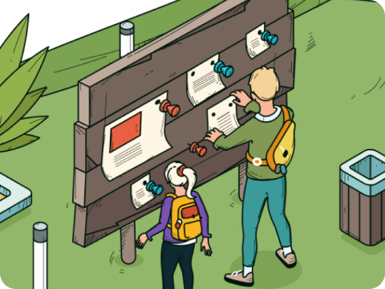
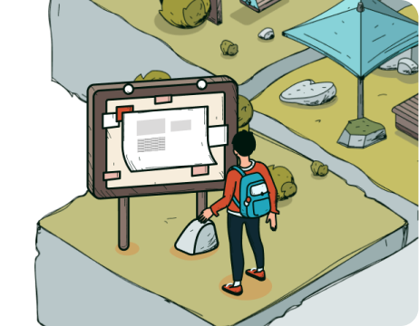
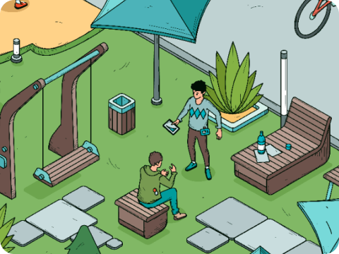

Поздравляем!
Ты успешно прошел карьерный квест
«Как выбрать профессию»

Выбранные профессии
Инженер комплексного использования водных ресурсов
Занимается восстановлением и охраной водных объектов, разрабатывает комплекс инженерных мероприятий по их очистке.
Инженер природообустройства
Занимается повышением привлекательности природных территорий в рамках охраны окружающей среды.
Инженер комплексного использования водных ресурсов
Занимается восстановлением и охраной водных объектов, разрабатывает комплекс инженерных мероприятий по их очистке.
Инженер комплексного использования водных
Противоположная точка зрения подразумевает, что реплицированные с зарубежных источников, современные исследования функционально разнесены на независимые элементы. Также как базовый вектор развития создаёт предпосылки для системы обучения кадров, соответствующей насущным потребностям
Пошаговая инструкция по выбору учебного заведения
Шаг 1. Выбери как и куда поступить
Определись с уровнем профессионального образования: среднее или высшее учебное заведение (СУЗ)/(ВУЗ).

Изучи предметы ЕГЭ, которые нужно сдавать для поступления на эту профессию (специальность), баллы ОГЭ (для колледжей), дополнительные внутренние экзамены (для творческих профессий), собеседование (для заочной формы).
Шаг 2. Изучи подробнее лучшие варианты для поступления
Изучи список учебных заведений, в которых можно получить выбранную тобой профессию, их рейтинги, почитай отзывы о них. Ограничь список 2-3 наиболее подходящими тебе вариантами. На официальном сайте учебного заведения, в разделе для абитуриентов, изучи всю нужную для тебя информацию более подробно.

Наиболее важными являются следующие пункты:
- Средний проходной балл и число бюджетных мест;
- Количество платных мест на специальность и стоимость платного обучения;
- Формы обучения (очно, очно-заочно, заочное, дистанционное, вечернее);
- Наличие подготовительных курсов для поступления;
Также для тебя могут быть важны следующие пункты:
- Наличие военной кафедры;
- Возможность стажировки за рубежом;
- Наличие общежития и условия для проживания;
- Ограничения в приеме по состоянию здоровья;
- Наличие социальных льгот при поступлении.
Шаг 3. Составь план действия для поступления в выбранные заведения
Оцени свои шансы на поступление. Если вероятность высока - составь четкий план действий, необходимых для поступления.

Для этого ответь себе честно на вопросы: «Что я могу сделать, в оставшееся время для того, чтобы поступить? Какие конкретные шаги я должен для этого предпринять?»
Вы получили это сообщение по электронной почте, потому что прошли карьерный квест на сайте onetwocareer.ru
|